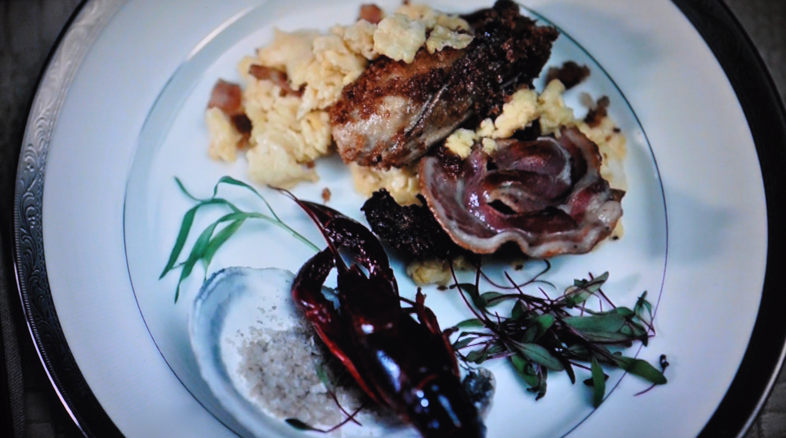

A Simple Breakfast

Description
A quick and easy scrambled egg and wild greens breakfast. Guaranteed to wake
you up and provide the nessesary protein to start your day. This meal can be
easily dressed up by adding oysters, your favorite extra protein from your
most recent hunt, or even some fresh fruit. Be careful not to add too many
different flavors, as it with detract from the simplistic appeal of this dish.
Shown with light greens and oysters.
Ingredients
- 3 organic, cage free and cruelty free eggs (the taste difference is noticable; you MUST use high quality eggs)
- 1/4 of a fresh onion, finely chopped
- A handfull of fresh greens of your choice (dandion, Arugula and Spinach are good options)
- 1 T. Butter
- 1 T. Milk or Cream
- Salt & Pepper to taste
- Optional: A small ammount of sausage, liver, oysters, etc, to add to the eggs are to dress up the plate
Steps
- Crack your eggs into a clean stainless steel bowl. Whisk them lightly with a fork or a whisk.
- Add the milk or cream and lighly season with salt and pepper.
- Saute your onion in the butter over medium heat until cooked through and a dark caramel color. (Note: if adding another protien, add here to the onions while they cook.)
- Without adjusting heat, pour your eggs into the onions, and cook until just set; about 2 minutes. Stir lightly throughout the process.
- As soon as your eggs are set, plate immediately and garnish with roughly 1/2 cup of washed greens. If you desire a more artistic look, you may add oyster shells, edible flowers, etc.
- Serve immediately while eggs are hot.